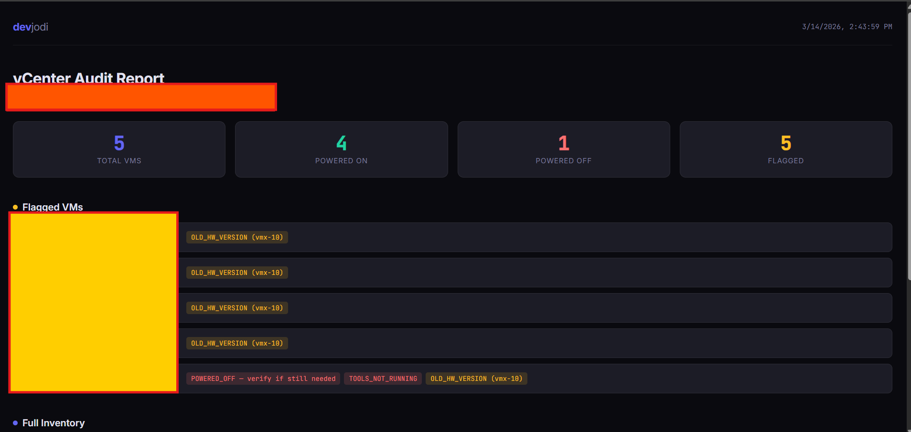

VMware environments grow organically. A developer spins up a test VM, forgets about it. A project ends but the VMs keep running. An old snapshot chain silently eats disk. Over time, without active monitoring, a vCenter environment becomes a graveyard of resources — and a security blind spot.
We built a small Python tool internally to connect to vCenter, pull a full VM inventory, and report on power states, resource usage, and machines that look suspicious or wasteful. This post walks through the approach.
Why vCenter Monitoring Matters for Security
VM sprawl is not just a cost problem — it is a security problem. Consider what an attacker can do with an orphaned VM:
- It likely hasn't received OS patches in months or years
- Its firewall rules may be overly permissive from a testing phase
- No one is watching its logs or network traffic
- It may still have active credentials, VPN configs, or service accounts on it
Beyond orphaned VMs, stale snapshots can expose sensitive data if the VM was cloned at a point where secrets were on disk. And VMs running with hardware version 7 or 8 are missing a decade of hypervisor security patches.
Key insight: Every unmonitored VM is an unknown attack surface. The first step to securing a VMware environment is knowing exactly what is running and what is not.
Prerequisites
You need:
- Python 3.8+ with
pyVmomiinstalled (pip install pyVmomi) - A vCenter account with read-only access (never use admin for monitoring)
- Network access to the vCenter server (port 443)
For the read-only account, create a dedicated monitoring role in vCenter with only the permissions needed — Global > Read, Virtual Machine > Read, Host > Read. Principle of least privilege applies here too.
Connecting to vCenter with pyVmomi
pyVmomi is VMware's official Python SDK for the vSphere API. It lets you connect to a vCenter or ESXi host and traverse the entire managed object model.
import ssl
import atexit
from pyVim.connect import SmartConnect, Disconnect
from pyVmomi import vim
def connect_vcenter(host, user, password, port=443):
"""Connect to vCenter and return a service instance."""
context = ssl.SSLContext(ssl.PROTOCOL_TLS_CLIENT)
# In production: load proper CA cert instead of disabling verification
context.check_hostname = False
context.verify_mode = ssl.CERT_NONE
si = SmartConnect(
host=host,
user=user,
pwd=password,
port=port,
sslContext=context
)
atexit.register(Disconnect, si)
return siWarning: The example above disables SSL verification for simplicity in lab environments. In production, always provide a proper CA certificate and set verify_mode = ssl.CERT_REQUIRED.
Collecting the Full VM Inventory
The most efficient way to retrieve all VMs is using pyVmomi's container view. This avoids manually traversing the object hierarchy and lets vCenter do the filtering on the server side.
def get_all_vms(si):
"""Return a list of all VM objects from vCenter."""
content = si.RetrieveContent()
container = content.rootFolder
view_type = [vim.VirtualMachine]
recursive = True
container_view = content.viewManager.CreateContainerView(
container, view_type, recursive
)
vms = list(container_view.view)
container_view.Destroy()
return vmsExtracting VM Metrics
For each VM object, we can pull config, runtime state, and guest info. Here is a function that extracts the fields we care about for both inventory and security review:
from datetime import datetime, timezone
def extract_vm_info(vm):
"""Extract key metadata from a VM managed object."""
config = vm.config
runtime = vm.runtime
summary = vm.summary
guest = vm.guest
# CPU and memory allocation
cpu_count = config.hardware.numCPU if config else None
memory_mb = config.hardware.memoryMB if config else None
# Power state
power_state = runtime.powerState # poweredOn / poweredOff / suspended
# Last time tools heartbeat was seen (indicates active use)
tools_running = guest.toolsRunningStatus if guest else "unknown"
# Snapshot count — high count = cleanup needed
snapshot_count = 0
if vm.snapshot:
snapshot_count = count_snapshots(vm.snapshot.rootSnapshotList)
# Hardware version (e.g. vmx-19)
hw_version = config.version if config else "unknown"
return {
"name": vm.name,
"power_state": power_state,
"cpu": cpu_count,
"memory_mb": memory_mb,
"tools_status": tools_running,
"snapshot_count": snapshot_count,
"hw_version": hw_version,
"guest_os": config.guestFullName if config else "unknown",
"uuid": config.uuid if config else None,
}
def count_snapshots(snapshot_list):
"""Recursively count all snapshots in the tree."""
count = 0
for snap in snapshot_list:
count += 1
if snap.childSnapshotList:
count += count_snapshots(snap.childSnapshotList)
return countFlagging VMs That Need Attention
Once you have the inventory, you can apply rules to identify VMs that need investigation. We use a simple flag system:
def audit_vm(vm_info):
"""Return a list of findings for a single VM."""
flags = []
if vm_info["power_state"] == "poweredOff":
flags.append("POWERED_OFF — verify if still needed")
if vm_info["snapshot_count"] > 3:
flags.append(f"HIGH_SNAPSHOT_COUNT ({vm_info['snapshot_count']}) — check for disk bloat")
if vm_info["tools_status"] == "guestToolsNotRunning":
flags.append("TOOLS_NOT_RUNNING — may indicate OS issue or stale VM")
hw = vm_info.get("hw_version", "")
if hw and int(hw.replace("vmx-", "")) < 15:
flags.append(f"OLD_HW_VERSION ({hw}) — upgrade to get security fixes")
if vm_info["memory_mb"] and vm_info["memory_mb"] > 32768:
flags.append(f"LARGE_MEMORY ({vm_info['memory_mb']} MB) — confirm allocation is justified")
return flagsPutting It Together — the Full Report
import json
def run_vcenter_audit(host, user, password):
si = connect_vcenter(host, user, password)
vms = get_all_vms(si)
report = {
"vcenter": host,
"timestamp": datetime.now(timezone.utc).isoformat(),
"total_vms": len(vms),
"powered_on": 0,
"powered_off": 0,
"flagged": [],
"inventory": [],
}
for vm in vms:
try:
info = extract_vm_info(vm)
flags = audit_vm(info)
if info["power_state"] == "poweredOn":
report["powered_on"] += 1
else:
report["powered_off"] += 1
entry = {**info, "flags": flags}
report["inventory"].append(entry)
if flags:
report["flagged"].append({
"name": info["name"],
"flags": flags,
})
except Exception as e:
report["inventory"].append({
"name": vm.name,
"error": str(e),
"flags": ["COLLECTION_ERROR"],
})
return report
if __name__ == "__main__":
result = run_vcenter_audit(
host="vcenter.internal",
user="monitoring-readonly@vsphere.local",
password="your-password-here",
)
print(json.dumps(result, indent=2))Building a Local Audit Dashboard
The JSON output is useful for scripting and CI pipelines, but for a weekly human review we built a companion HTML dashboard that loads the report and renders it in the browser — no backend required. The dashboard is a single static file that fetches vcenter_audit.json via fetch() and renders stat cards, a flagged-VM list, and a full inventory table.
To serve it locally after running the audit:
# Run the audit
python3 scripts/vcenter_audit.py
# Copy the output next to the dashboard and serve
cp /tmp/vcenter_audit.json scripts/
python3 -m http.server 8080 --directory scriptsThen open http://localhost:8080/dashboard.html in your browser.

From a single audit run against a real environment we immediately found every VM running on vmx-10 — two major hardware versions behind the vmx-15 baseline — plus one powered-off VM with VMware Tools not running. Both are actionable findings that are easy to miss without automated checks.
Sample JSON Output
The raw JSON written to /tmp/vcenter_audit.json looks like this:
{
"vcenter": "vcenter.internal",
"timestamp": "2026-03-14T09:12:44+00:00",
"total_vms": 47,
"powered_on": 31,
"powered_off": 16,
"flagged": [
{
"name": "dev-test-001",
"flags": [
"POWERED_OFF — verify if still needed",
"OLD_HW_VERSION (vmx-11) — upgrade to get security fixes"
]
},
{
"name": "build-agent-legacy",
"flags": [
"HIGH_SNAPSHOT_COUNT (9) — check for disk bloat",
"TOOLS_NOT_RUNNING — may indicate OS issue or stale VM"
]
}
]
}What to Do With the Results
The raw output is useful for one-off audits, but the real value comes from running this on a schedule and tracking changes over time. Here are the workflows we follow:
Weekly review
- Any new powered-off VM that appeared this week? Confirm with the owner or schedule for deletion in 30 days.
- Any VM with tools not running on a machine that should be active? Investigate — this can indicate a crashed or compromised guest.
- High snapshot count VMs — schedule a cleanup window.
Security triage
- VMs on old hardware versions should be treated as tech debt with a deadline, not an optional upgrade.
- Any powered-off VM more than 90 days old with no documented owner should be moved to a quarantine folder and decommissioned.
- Cross-reference the powered-on list against your CMDB or asset tracker. Any VM not in your CMDB is a shadow asset.
Alerting
- Export flagged VMs to a Slack webhook or email digest.
- Push the JSON report to an S3 bucket or internal wiki as a timestamped artifact.
- Track the
total_vmscount over time — sudden growth is worth investigating.
Taking It Further
This tool covers inventory and basic flagging. Extensions worth building:
- Resource utilization — use the vCenter performance manager API to pull actual CPU/memory usage, not just allocation. A VM with 16 vCPU that averages 2% usage is a strong candidate for right-sizing.
- Network adapter audit — enumerate NICs and check for VMs connected to promiscuous mode port groups.
- Datastore correlation — map each VM to its datastore and flag VMs where the combined snapshot chain exceeds 50% of the base VMDK size.
- vCenter event log integration — pull login events and failed authentication attempts from the vCenter event stream to detect brute force attempts against ESXi hosts.
Tip: Run the audit with a read-only service account and store credentials in HashiCorp Vault or your secrets manager. Never hardcode vCenter credentials in scripts.
Conclusion
A VMware environment without monitoring is a black box — and black boxes invite both waste and compromise. This script is deliberately minimal: under 150 lines, no external dependencies beyond pyVmomi, no database, no agent. It can run from a cron job, a CI pipeline, or a scheduled Lambda.
The goal is not to build the most featureful monitoring tool — it is to remove the excuse of not knowing. Once you know what is running, you can make informed decisions about patching, decommissioning, and access control.
In a follow-up post we'll extend this to pull performance counters and build a simple utilization heatmap — useful when you need to justify a hardware refresh or identify consolidation candidates.